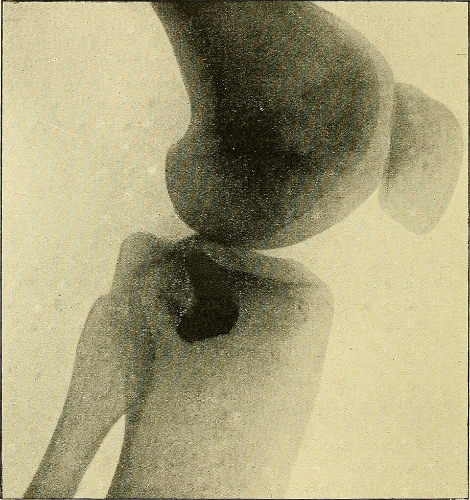
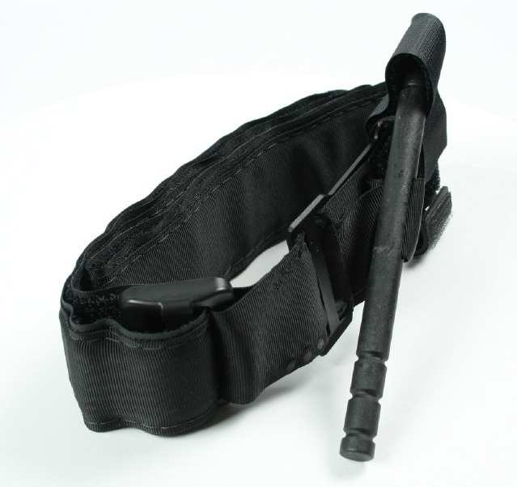
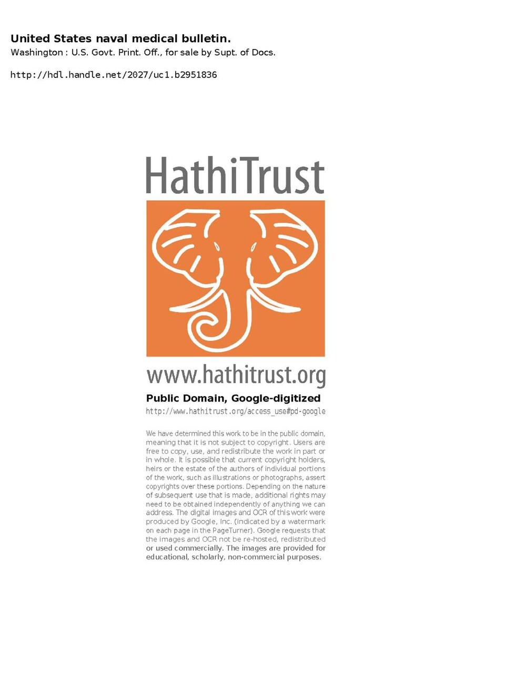
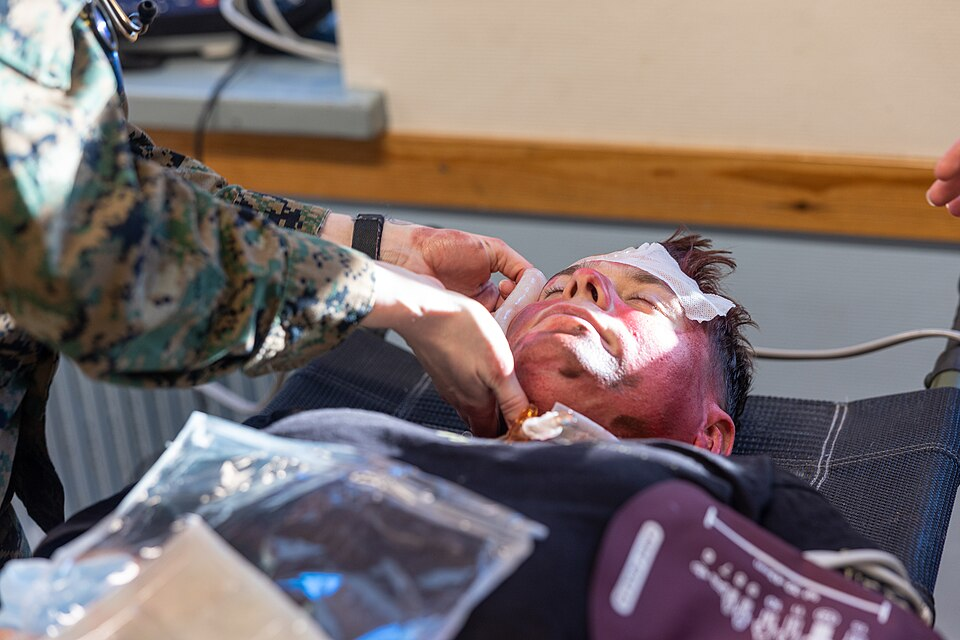

📑 Contents
Outback First Aid
In the Australian outback, emergency medical help can be hours or even days away. The Royal Flying Doctor Service (RFDS) is the backbone of remote emergency medicine, but you cannot rely on rapid response in all areas. Every outback traveller must know how to stabilise life-threatening conditions — snake bite, heat stroke, severe bleeding, spinal injury — with limited equipment and no expectation of quick evacuation.
This page covers the highest-priority remote first aid scenarios. For general first aid (CPR, choking, allergic reaction), see First Aid.
Snake Bite (Highest Priority)
Australia has 20 of the world's 25 most venomous snake species. The brown snake, taipan, tiger snake, and death adder are the most dangerous. Snake bite is the remote first aid emergency where correct technique has the biggest impact on survival.
Pressure Immobilisation Bandage (PIB) Technique

Pressure Immobilisation Bandage (PIB) — the only proven method for slowing venom spread. Start at the bite site and bandage upwards. Image: Wikimedia Commons (CC BY-SA).This is the only proven method for slowing venom spread. Do not deviate from this sequence.
- Keep the victim still and calm. Movement pumps venom through the lymphatic system. Do not let them walk. Do not wash the wound — venom on the skin helps hospital staff identify the species through venom detection kits.
- Apply a pressure bandage. Start at the bite site and bandage upwards (towards the heart) over the entire limb. Bandage as tight as for a sprained ankle — firm enough to compress lymphatic vessels but not tight enough to cut circulation. Fingers/toes should remain pink with normal capillary refill (< 2 seconds).
- Splint the limb. Apply a splint to prevent joint movement. Any rigid material will work — a SAM splint, a branch wrapped in cloth, or even a folded magazine bound to the limb.
- Mark the bite site. Use a pen to circle the bite site on the bandage. This helps medical staff know where to focus without removing the bandage.
- Do not remove the bandage. Leave it in place until the victim is in a hospital with antivenom available. Removing it releases a bolus of venom into the circulation.
- Do not cut, suck, or tourniquet. These outdated methods cause tissue damage and do not help. Tourniquets in particular can cause limb loss.
Snake Identification
- Do not chase the snake to catch or kill it — this wastes time and risks a second bite
- Take a photo only if it is safe to do so (from a distance, using phone zoom)
- Note: size, colour pattern, head shape (triangular vs narrow), and behaviour
- A description is often enough for hospitals to prepare the correct antivenom (polyvalent antivenom covers most Australian species)
Time to Symptoms
| Species | Onset of Systemic Symptoms | Notes |
|---|---|---|
| Brown snake | 15–30 minutes | Rapid collapse possible. Most common fatal snake in Australia. |
| Taipan | 15–30 minutes | Neurotoxic. Breathing difficulty can develop within 1 hour. |
| Tiger snake | 30 minutes – 2 hours | Neurotoxin + coagulopathy. |
| Death adder | 1–6 hours | Predominantly neurotoxic. Paralysis onset delayed but severe. |
| Other species | 1–6 hours | Variable. PIB still essential for all. |
Collapse Management
If the victim collapses and stops breathing:
- Start CPR immediately. Do not wait for instructions. Venom effects can be reversed at hospital if the brain is kept oxygenated.
- Continue CPR until medical help arrives or the victim regains consciousness. Cases of prolonged CPR (30+ minutes) with survival are documented in Australian snake bite.
- Call 000 or activate your PLB as soon as someone is doing chest compressions.
Heat Illness
Full details on heat illness progression, recognition, and treatment are covered in Extreme Heat Survival. This section provides a quick-reference summary for the outback first aid context.
| Condition | Key Signs | Immediate Action |
|---|---|---|
| Heat Cramps | Painful muscle spasms, heavy sweating | Rest in shade, electrolyte drink, gentle stretching |
| Heat Exhaustion | Heavy sweating, cold/clammy skin, weak pulse, nausea, dizziness | Shade, lie down, elevate feet, cool water in sips, wet cloths |
| Heat Stroke | Hot dry skin, confusion, agitation, unconsciousness | EMERGENCY. Strip clothing, wet down, fan aggressively. Cool before anything else. |
Heat stroke critical rule: Cool the person before you call for help. Every minute of cooling reduces organ damage. Once core temperature exceeds 41°C, brain damage begins. If someone has hot dry skin and is confused or unconscious, they are in a life-threatening emergency.
Major Bleeding (Remote-Specific)
Bleeding control in the outback is different from urban first aid because evacuation will not be quick. A bleed that would be survivable in the city can become fatal over hours of waiting for help.
Direct Pressure
- Apply firm, direct pressure to the wound using a clean cloth, combine dressing, or any absorbent material
- Minimum 10 minutes of uninterrupted pressure. Do not peek to check if bleeding has stopped. Peeking disrupts clot formation.
- If blood soaks through the first dressing, add another layer on top — do not remove the original dressing
- Elevate the bleeding limb above heart level if there is no fracture
Improvised Tourniquet

Improvised tourniquet — only for arterial bleeding when direct pressure fails. Use a wide strip of fabric, not wire or cord. Image: Wikimedia Commons (CC BY-SA).Tourniquets are rarely needed but can be life-saving in specific circumstances.
When to tourniquet: Only if direct pressure fails and bleeding is arterial (bright red blood spurting in time with the pulse). Venous bleeding (dark, steady flow) can almost always be controlled with direct pressure.
How to improvise: - Use a strip of fabric at least 5 cm wide: seatbelt, torn shirt, rope, belt, bandage - Never use wire, string, or cord — these cut into tissue and cause nerve damage - Tie the material around the limb 5–7 cm above the wound (between wound and heart) - Insert a stick or rigid object into the knot and twist to tighten - Tighten until bleeding stops — this will be very painful for the patient - Secure the stick in place with another strip of fabric - Write the time of application on the patient's forehead with a pen or marker (not on the limb — it can be missed)
Tourniquet safety: Once applied, do not loosen. A tourniquet applied correctly may need to stay in place for hours. Limb loss is a concern after 2–3 hours, but exsanguination kills in minutes. If faced with the choice between limb loss and death, choose the limb.
Infection Prevention
- Clean the wound with the cleanest available water as soon as bleeding is controlled
- Apply antiseptic (Betadine/iodine) if available
- Cover with a clean, dry dressing
- Change the dressing daily and inspect for signs of infection
Fractures & Sprains
Splinting Principles

Improvised splint — immobilise the joint above AND below the fracture. Any rigid material will work. Image: Wikimedia Commons (CC BY-SA).Any rigid material can be used as a splint. The key rule: immobilise the joint above AND the joint below the fracture.
- Improvised splints: straight branch, tent pole, rolled-up sleeping mat, SAM splint, shovel handle, axe handle
- Pad the splint with clothing, bandages, or cloth where it contacts the body
- Bind with bandages, torn fabric, tape, or paracord — secure enough to prevent movement but not tight enough to cut circulation
- Check fingers/toes for colour and sensation after splinting
Ankle Injuries
- Do not remove the boot. Swelling will prevent it going back on, and the boot itself acts as a rigid splint.
- Loosen laces to accommodate swelling
- If walking is unavoidable, tighten the boot moderately for support
- RICE: Rest, Ice (if available), Compression (elastic bandage if available), Elevation
Collarbone (Clavicle)
- Create a sling: triangle bandage or torn shirt supporting the forearm
- Swathe: wrap a second bandage around the arm and torso to hold the arm against the chest
- This reduces pain and prevents bone ends from moving against each other
Spinal Injury
- Do not move the patient unless they are in immediate danger (vehicle fire, rising floodwater, rockfall)
- If they must be moved, use the log-roll technique: keep the head, neck, and spine aligned as a single unit
- Stabilise the head with hands or weighted objects (bags, rocks) placed on either side
- Wait for professional rescue. Do not attempt to transport a spinal patient over rough terrain
Burns
Immediate Treatment

Burn first aid — cool running water for 20 minutes is the single most important treatment. Do not apply butter, oil, or ice. Image: Wikimedia Commons (CC BY-SA).- Cool running water for 20 minutes. This is the single most important burn treatment. Use drinking water, vehicle radiator water (cooled), or any clean water source.
- If running water is not available, immerse in clean water or apply wet clean cloths, replacing them as they warm
- Remove jewellery and clothing from the burned area (unless clothing is stuck to the wound — leave stuck clothing in place)
What NOT to Apply
Do not apply any of these — they trap heat, cause infection, or make clinical assessment impossible:
- Butter, oil, or fat
- Ice (causes frostbite on top of burn)
- Toothpaste
- Raw egg white
- Flour
- Any cream or ointment
Covering the Burn
- Cover loosely with a clean, dry, non-stick dressing
- Cling wrap (plastic wrap) is excellent — it will not stick to the wound and provides a sterile barrier. Apply it as a single layer, not wrapped tightly around the limb
- A clean pillowcase or shirt can be used if nothing else is available
- Do not burst blisters — the intact skin is the best barrier against infection
Respiratory Burns
If the person was in a fire or enclosed space with smoke:
- Check for: coughing, hoarse voice, sooty sputum (black phlegm), singed nasal hairs, difficulty breathing
- Airway swelling can kill within hours. This is an urgent evacuation priority
- Keep the person upright if conscious
- Call 000 and activate PLB — respiratory burns require hospital treatment even if the person seems fine initially
Eye Injuries
Foreign Body (Dust, Spinifex, Insects)
Outback travellers face constant eye irritation from red dust, spinifex seeds, and flying insects.
- Flush with clean water — use a saline ampoule from your first aid kit, or pour clean water gently into the inner corner of the eye, letting it flow across the eye to the outer corner
- Eyelid sweep — grasp the upper lashes and gently pull the upper eyelid over the lower lashes. The lower lashes act as a brush to sweep the foreign body off the cornea
- If the object does not flush out and the eye is painful, close the eye, patch it loosely, and seek help
- Do not rub the eye — this can scratch the cornea
UV Burn (Photokeratitis)
- Similar to snow blindness but caused by intense reflected sunlight from sand, water, and pale ground
- Symptoms (6–12 hours after exposure): both eyes painful, gritty feeling, sensitivity to light (photophobia), excessive tearing, blurred vision
- Treatment: rest with eyes closed in a dark space, cold compresses, pain relief (ibuprofen)
- Recovery: 24–48 hours with no further UV exposure
- Prevention: polarised sunglasses are essential — do not travel without them. If sunglasses are lost, cut narrow horizontal slits in fabric and tie around the head
Infection in Remote Areas
A small cut that would be treated promptly in the city can become a serious problem when you are days from medical care.
Why It Matters
- The outback is dusty, dirty, and full of bacteria
- You may not have access to antibiotics
- You cannot "wait and see" when evacuation takes 48 hours
Wound Cleaning
- Clean the wound as soon as possible with the cleanest water available
- If you have Betadine or iodine, apply it to the wound after cleaning
- Cover with a clean, dry dressing
- Change the dressing daily and inspect
Signs of Infection
| Sign | What to Look For |
|---|---|
| Pain | Increasing pain at the wound site, not decreasing |
| Swelling | Visible swelling around the wound that gets worse |
| Redness | Redness spreading outward from the wound |
| Heat | The skin around the wound feels warm to touch |
| Pus | Yellow or green discharge from the wound |
| Fever | Body temperature above 38°C — systemic infection |
Draining an Abscess
If pus has collected and formed a point (yellow/white head visible under the skin):
- Apply a warm compress for 10–15 minutes to encourage the pus to surface
- If the abscess has a clear point, use a sterile needle (heat a sewing needle red-hot and let it cool, or use a sterile lancet from your kit) to make a small opening
- Gently express the pus with clean fingers or gauze
- Clean thoroughly with Betadine or saline
- Cover with a clean dressing
- Repeat warm compresses and drainage daily if needed
When to Evacuate for Infection
Evacuate immediately if you see any of these:
- Red streaks tracking up the limb — this is lymphangitis, meaning the infection is spreading through your lymphatic system. This can progress to sepsis within hours.
- Fever (temperature > 38°C) with a wound — systemic infection
- Rapidly worsening pain and swelling — suspected necrotising fasciitis (flesh-eating infection)
- The person is confused or seems unwell — sepsis can present as confusion before other signs
Improvised Medical Kit
What to carry in your vehicle for outback remote travel. This supplements a standard first aid kit with items specific to remote conditions.
| Item | Purpose | Quantity |
|---|---|---|
| Setopress or Smart bandages (elastic, with indicator rectangles) | Snake bite PIB — the rectangles stretch to a square when correct pressure is reached | 2 |
| Combine dressing pads | Absorbent wound dressing for major bleeding | 4–6 |
| Saline ampoules (10–20 mL each) | Eye wash, wound irrigation | 10 |
| Betadine or iodine solution | Wound antiseptic | 1 bottle |
| Triangle bandages | Sling, splint binding, tourniquet, head wound dressing | 4 |
| Medical tape | Securing dressings, splints | 1 roll |
| SAM splint | Malleable aluminium splint for fingers, wrists, arms, ankles | 2 |
| Tweezers | Removing splinters, spinifex, ticks | 1 |
| Scissors | Cutting bandages, clothing | 1 |
| Safety pins | Securing slings, bandages | 6 |
| Paracetamol | Pain relief, fever reduction | 1 packet |
| Ibuprofen | Anti-inflammatory, pain relief | 1 packet |
| Antihistamine (Cetirizine or Loratadine) | Allergic reactions, insect bites | 1 packet |
| Loperamide | Anti-diarrhoea — prevents dehydration | 1 packet |
| Electrolyte sachets (Hydralyte/Gastrolyte) | Rehydration for heat illness, diarrhoea | 10 |
| Nitrile gloves | Infection control for wound treatment | 5 pairs |
Storage note: Keep these in a dedicated, clearly labelled bag or container within easy reach in your vehicle. Do not bury them under camping gear. In an emergency, you need to access them immediately.
When to Activate Emergency Response
In the outback, your primary emergency response tools are:
- PLB (Personal Locator Beacon) — 406 MHz with GPS. Activates the Australian Maritime Safety Authority (AMSA) rescue coordination centre.
- EPIRB — Similar to PLB but designed for maritime; works on land too.
- Satellite phone or messenger (inReach, Zoleo) — Allows two-way communication with emergency services.
- UHF CB Radio — Channel 5 (emergency), Channel 40 (highway/truckies). Range is limited to line-of-sight (5–30 km depending on terrain).
- Mobile phone — Only works near major highways and towns. Do not rely on it.
Priority 1 — Activate PLB Immediately
Activate your PLB and call 000 if possible for any of these:
- Unconscious person — from any cause
- Severe bleeding not controlled after 10 minutes of continuous direct pressure
- Suspected spinal injury — do not move the patient
- Snake bite with symptoms developing — collapse, breathing difficulty, paralysis, or any systemic signs
- Heat stroke — hot dry skin with confusion or unconsciousness
- Chest pain with breathing difficulty — suspected heart attack
- Severe allergic reaction — breathing difficulty, swelling of face/throat
Priority 2 — Attempt Self-Evacuation First
These situations are serious but may not warrant immediate PLB activation if you can self-evacuate within a few hours:
- Fractured limb — stable, pain controlled, no nerve or circulation compromise
- Significant wound — bleeding controlled, infection risk manageable, able to travel
- Eye injury affecting vision — not a penetrating injury, not a chemical burn
- Dehydration — still conscious and able to drink, no organ failure signs
- Burns — less than 10% body surface area (roughly one arm or one leg), no respiratory signs
The Golden Rule of PLB Activation
Do not delay PLB activation because you might be wrong. The Australian Maritime Safety Authority (AMSA) can call off a search if the situation resolves — they cannot give you back the time you wasted waiting.
If in doubt, activate. The cost of a false alarm is negligible compared to the cost of a delayed rescue.
Related Pages
- Extreme Heat Survival — Heat illness progression, shade creation, hydration strategy
- Vehicle Breakdown: Stay or Go? — The core outback survival decision
- Emergency Services — Contacting help, PLB/EPIRB, UHF channels
- What to Carry — Outback gear checklist
- First Aid — General medical emergencies
- Heat Survival — Hydration and heat illness prevention